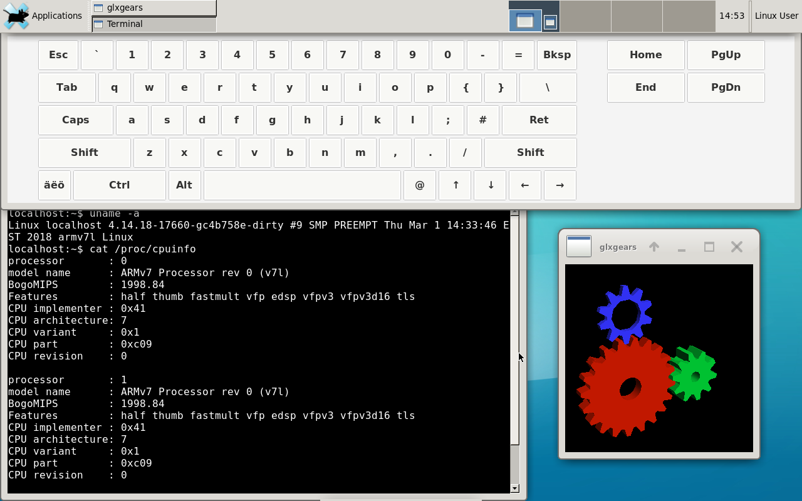

Samsung Galaxy Tab 10.1 (samsung-p4wifi)
|

Xfce4 running on Samsung Galaxy Tab 10.1 (p4wifi) |
|
| Manufacturer | Samsung |
|---|---|
| Name | Galaxy Tab 10.1 |
| Codename | samsung-p4wifi |
| Released | 2011 |
| Category | testing |
| Original software | Android 3.1 Honeycomb |
| postmarketOS kernel | 5.15.0_rc4 |
| Hardware | |
| Chipset | NVIDIA Tegra 2 250 T20 |
| CPU | 2x 1.0 Ghz Cortex-A9 |
| GPU | NVIDIA Geforce ULP |
| Display | 1280×800 |
| Storage | 16/32 GB |
| Memory | 1GB |
| Architecture | armv7 |
| Unixbench Whet/Dhry score | 424.5 |
{kind=link}
| USB Networking |
Works
|
|---|---|
| Flashing |
Works
|
| Touchscreen |
Works
|
| Display |
Works
|
| WiFi |
Works
|
| FDE |
Works
|
| Mainline |
Partial
|
| Battery |
Works
|
| 3D Acceleration |
|
| Audio |
Works
|
| Bluetooth |
Works
|
| Camera |
|
| GPS |
|
| Mobile data |
Unavailable
|
| SMS |
Unavailable
|
| Calls |
Unavailable
|
| USB OTG |
|
| NFC |
Unavailable
|
| Accelerometer |
Works
|
|---|---|
| Magnetometer |
|
| Ambient Light |
|
| Proximity |
|
| Hall Effect |
|
| Ir TX |
|
|---|---|
| TrustZone |
|
Maintainer(s)
- None
Users owning this device
- Decatf
- Kokokoshka
- Maxnet ( Notes: Variant: GT-P7501, current mainline target)
- Progressnoize
- X3mboy
How to enter flash mode
Press and hold Power + Volume Up buttons until you see the "Downloading" screen. Confirm that you want to enter the mode by pressing the Volume Down button twice.
Installation
Init pmbootstrap
$ pmbootstrap init
Choose 'samsung' as the vendor and 'p4wifi' as target device. Build the image:
$ pmbootstrap install
Enter flash (download) mode Flash the kernel and system images
$ pmbootstrap flasher flash_kernel
$ pmbootstrap flasher flash_rootfs
As alternative you can flash rootfs to Data partition to use more space, because default system partition is small
$ pmbootstrap flasher flash_rootfs --partition UDA
If these two commands fail
$ pmbootstrap export
$ heimdall flash --LNX /tmp/postmarketOS-export/boot.img --UDA /tmp/postmarketOS-export/samsung-p4wifi.img
Battery
The battery in this device is the
max17042
. A tear down of the (nearly) identical Galaxy Tab 8.9 reveals that the charger is
max8903
.
Differences between mainline and downstream drivers:
The downstream kernel provides an early implementation of a driver for the
max17042
battery. The implementation of the battery and charger driver are split across
p4_battery.c
and
max17042_battery.c
. The downstream charger driver implements additional logic to handle charge full and low battery events which may affect the health of the battery. The implementation details are not clear but the overall functionality appears to dynamically tune the full charge value. The mainline driver does not have this sort of functionality. The downstream driver reports the current in milliamp whereas the mainline driver is in microamp.
The
max8903
datasheet shows that there are separate GPIOs for USB and DC power connectors. This device has one connect GPIO for both USB and DC mode. The type of connector is determined by reading the
usb-sel
GPIOs. It's unclear which piece of hardware the usb-sel is coming from (max8903 / tegra soc / 30-pin connector ???).
Graphics
Moved to Nvidia_Tegra_2_(tegra20)#Graphics which cover all Tegra 2 devices.
Audio
Audio output through headphone and speakers are working. Audio input through the built-in microphone and headset microphone are working.
The ALSA UCM config files were previously generated using the
xml2ucm
tool. The
mixer_paths.xml
and
p4wifi.config.xml
can be found in this
github gist
.
$ stack exec -- xml2ucm -m mixer_paths.xml -c p4wifi-config.xml -o examples
As of pmaports!254 the ALSA UCM config files were created based the wm8994 datasheet and the downstream driver coding of the mixer.
The audio inputs are muted by default. Unmute and set the volume with
alsamixer
or set the mixer controls manually with
amixer
. The right channel (
IN1R
) is the headset microphone. The left channel (
IN1L
) is the built-in microphone.
Unmuting the headset microphone:
$ amixer cset name='IN1R Switch' on
$ amixer cset name='IN1R Volume' 11
Note: Plug in the headset mic at boot otherwise the sound driver will not load. Some wm8994 device register writes fail during driver probe unless mic bias GPIO is set to high.
Wifi
The wifi chip in this device is the Broadcom BCM4330 B1 revision. There is a B2 revision which is much more common. The only distinguishing factor is the firmware. Only the B1 firmware will work on this device. The most common BCM4330 firmware found from various sources (such as
linux-firmware
) is for the B2 revision.
Cellular Modem
The xmm6260 modem was used in quite a few Samsung Android devices from the same era as this tablet. The Samsung Galaxy Tab 10.1 3G (p4) and Samsung Galaxy Tab 10.1 from T-Mobile (p4tmo) are otherwise identical to the WiFi only version of the tablet (p4wifi). The cellular modem is connected via an internal USB interface called USB HSIC. The mainline Tegra USB driver does not implement this functionality. Much of the work in enabling the cellular stack would involve adding USB HSIC support to the mainline USB driver.
Bluetooth
The bcm4330 Bluetooth module is supported by the mainline kernel and Bluez 5 stack.
Install bluetooth service:
$ apk add bluez
$ rc-update add bluetooth default
$ rc-service bluetooth start
Pair a Bluetooth device:
$ bluetoothctl
$ power on
$ scan on
$ connect XX:XX:XX:XX:XX:XX
$ scan off
Audio
The following instructions will play audio to a Bluetooth headset.
Install PulseAudio:
$ apk add pulseaudio pulseaudio-bluez pulseaudio-utils
Start PulseAudio:
$ pulseaudio --daemonize
Check that the Bluetooth audio profiles are working in bluetoothctl:
$ show
Controller XX:XX:XX:XX:XX:XX (public)
Name: BlueZ 5.49
Alias: BlueZ 5.49
Class: 0x000c0000
Powered: yes
Discoverable: no
Pairable: yes
UUID: Headset AG (00001112-0000-1000-8000-00805f9b34fb)
UUID: Generic Attribute Profile (00001801-0000-1000-8000-00805f9b34fb)
UUID: A/V Remote Control (0000110e-0000-1000-8000-00805f9b34fb)
UUID: Generic Access Profile (00001800-0000-1000-8000-00805f9b34fb)
UUID: PnP Information (00001200-0000-1000-8000-00805f9b34fb)
UUID: A/V Remote Control Target (0000110c-0000-1000-8000-00805f9b34fb)
UUID: Audio Source (0000110a-0000-1000-8000-00805f9b34fb)
UUID: Audio Sink (0000110b-0000-1000-8000-00805f9b34fb)
UUID: Headset (00001108-0000-1000-8000-00805f9b34fb)
Modalias: usb:v1D6Bp0246d0531
Discovering: no
Play an audio file through a Bluetooth headset:
$ paplay audio.wav
Accelerometer
The
kxt9f
accelerometer driver works pending device tree patches being merged into upstream. There requires a user space daemon such as
iio-sensor-proxy
to read the sensor data.
USB OTG
USB OTG mode is not implemented in the mainline USB driver.
Other Information
Hardware Information & Mainline Driver Status
The Linux mainlining effort contains drivers forward ported from the stock Samsung Linux 3.1.10 kernel which shipped with the device. Some peripheral devices have been transitioned over to the mainline driver. Other drivers are not in the mainline kernel or the device is not compatible with the mainline driver.
| Peripheral Type | Hardware |
Mainline Driver
Status |
|---|---|---|
| Accelerometer | kxtf9 1 | |
| Ambient light sensor | bh1721fvc | Y |
| Analog Digital Converter | stmpe811 | Y |
| Audio | wm8994 | Y |
| Battery | max17042 | Y |
| Camera |
s5k5ccgx (front)
s5k6bbgx (back) |
- |
| Charger | max8903 | Y |
| Compass | ak8975c 2 | |
| CPU Temperature Sensor | nct1008 | Y |
| Display Panel | cmc623 | P |
| GPS | bcm4751 | P |
| GPU | tegra host1x | Y |
| Gyroscope | mpu3050 | Y |
| HDMI Connector | sii9234 3 | |
| Touch Digitizer | mxt1386 | Y |
| Vibration Motor | isa1200 | P |
| Voltage Regulators | tps6586x | Y |
| Wifi / Bluetooth | bcm4330 | Y |
| 3G Modem | xmm6260 | - |
| 3.5mm Jack | sec_jack | P |
| 30-pin accessory port | unknown | - |
Notes:
- 1: kxt9f driver exists in mainline. The driver needs support device tree bindings.
- 2: ak8975 driver exists in mainline. The device id for ak8975c needs to be added to the driver. I (decatf) can't test it because the compass seems to report nonsense data. The compass on my tablet might be broken.
- 3: sii9234 driver exists in mainline. Requires someone with an MHL cable to implement / test it.
Mainline Driver Status Legend
| Code | Meaning |
|---|---|
| Y | Mainline driver |
| P | Forward ported driver |
| - | No driver -- driver has not been forward ported |
hwtest results
samsung-p4wifi:~$ hwtest
Category Model Path Status Value
framebuffer /sys/class/graphics/fb0 working U:1280x800p-0
drm - /sys/class/drm/card0-LVDS-1 working 1280x800
magnetometer ak8975 /sys/bus/iio/devices/iio:device3 working -0.0, -0.0, -0.58 gauss
accelerometer kxtf9 /sys/bus/iio/devices/iio:device2 working -0.42, -0.86, -9.83 g
gyroscope mpu3050 /sys/bus/iio/devices/iio:device1 working 0.27, 69.93, 0.27 rad/s
temperature mpu3050 /sys/bus/iio/devices/iio:device1 working 261.9 deg C
illuminance bh1721 /sys/bus/iio/devices/iio:device4 working 53 lux
input gpio-keys /dev/input/event2 working
input Atmel maXTouch Touchscreen /dev/input/event1 working
input 7000e200.keyboard /dev/input/event0 working working
Latest mainline (just few patches diverged from upstream)
latest kernel from grate-linux
- https://github.com/grate-driver/linux/
See also
postmarketOS:
- !1279 Initial merge request
- pmaports!2579 Updating the device port to use the close-to-mainline kernel
- #1386 Update linux-samsung-p4wifi to kernel 4.16 (with some comments about what's left to do before we could have a shared mainline kernel)
- Device package
- Kernel package
Kernels sources:
- Grate kernel (kernel for upstreaming preparation, p4wifi already included)
- decatf mainline Linux kernel (2019/03)
- Samsung 3.1.10 kernel (old original stock)
Specs: